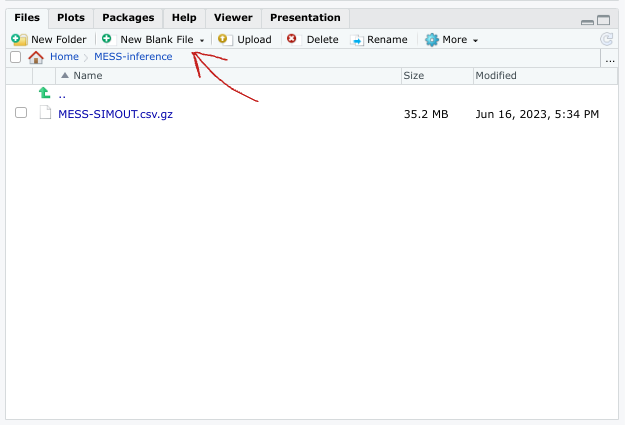
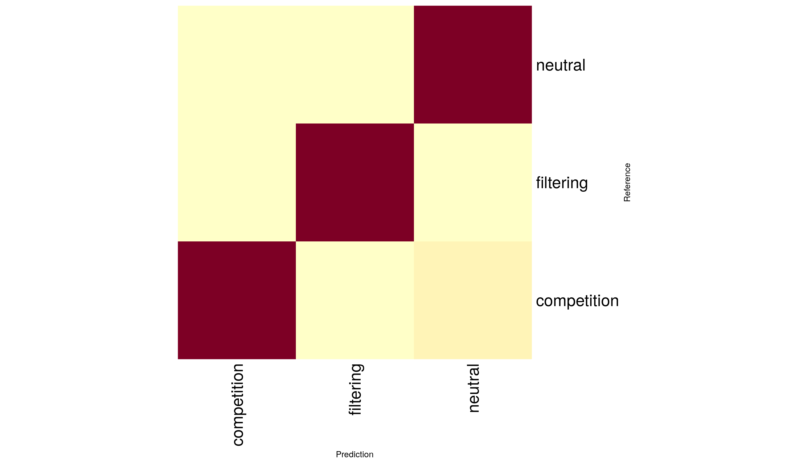
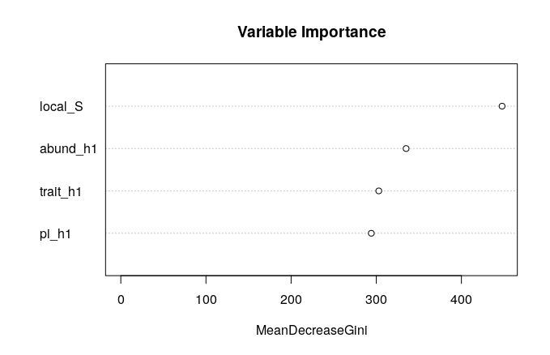
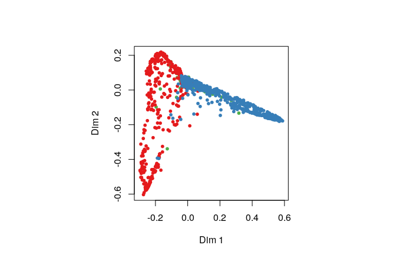

11 ML model selection with MESS simulations
11.1 Key questions
- What do I do with all these MESS simulations?
- How do I perform ML inference using MESS simulations in R?
11.2 Lesson objectives
After this lesson, learners should be able to…
- Use MESS simulations and RandomForest ML to perform community assembly model selection (classification)
- Evaluate uncertainty in classification accuracy using confusion matrices
- Apply ML Classification to empirical data and interpret results in terms of story
- Brainstorm applications to other systems/empirical datasets
11.3 Planned exercises
- Lecture: How does ML work with MESS simulations?
- Motivating community assembly model classification
- Get the MESS simulations and do some set-up
- Overview of major steps of machine learning process
- Implement ML assembly model classification
- Hands-on Exercise: Predicting
assembly_modelof mystery simulations
11.3.1 Lecture: How does ML work with MESS simulations?
Lecture: How does machine learning work with MESS simulations?
11.3.2 Motivating community assembly model classification
The first step is now to assess the model of community assembly that best fits the data. The three models are neutral, in which all individuals are ecologically equivalent; competition, in which species have traits, and differential survival probability is weighted by distance of traits from the trait mean in the local community (closer to the trait mean == higher probability of death); and filtering, in which there is an environmental optimum, and proximity of trait values to this optimum is positively correlated with survival probability.
Basically we want to know, are individuals in the local community ecologically equivalent, and if not are they interacting more with each other or more with the local environment. To accomplish this, we are going to use simulation-based supervised machine learning, which is what the rest of this lesson is all about.
11.3.3 Run MESS simulations
Ok, so now we know what we want to know: Are the “data” (the Hill # summary statistics for abundance, traits, and genetics) sufficient to distinguish among community assembly models? How do we go about evaluating this question? Well, the first step is to generate a large number simuations under each of the three assembly models, so we have a representative sample of patterns in the data characteristic of each assembly model.
Coding exercise: Create a new MESS$Core object and use a for loop to run 2 simulations for each of the three community assembly models: neutral, competition, and filtering.
MESS <- import("iBioGen", as="MESS")
core = MESS$Core("watdo")
## Set all the parameters common to all simulations
core$set_param("ntaxa", "300")
core$set_param("J", "40000-150000")
core$set_param("colrate", "0.0001-0.005")
core$set_param("ecological_strength", "0.1-10.0")
core$set_param("local_stop_criterion", "equilibrium")
core$set_param("local_stop_time", "0.5-1.0")
for (model in c("neutral", "competition", "filtering")){
core$set_param("assembly_model", model)
core$simulate(nsims=2)
}11.3.3.1 Download the pre-baked simulations
Since it can take quite some time to run a number of simulations sufficient for model selection and parameter estimation we will use a suite of pre-baked simulations generated ahead of time. We want to practice good organizational habits for our simulations and .R scripts, so as a challenge, before downloading the simulations file, **make a new directory in your home directory called “MESS-inference” and change directory into it.*
## Make sure you are in your home directory
cd ~
## Make the 'MESS-inference' directory
mkdir MESS-inference
## change into the new directory
cd MESS-inference
## print working directory to verify you are where you should be
pwd/home/rstudio/MESS-inferenceOnce you are in the /home/rstudio/MESS-inference directory, you may fetch the simulations from the workshop site using wget:
wget https://github.com/role-model/process-models-workshop/raw/main/data/MESS-SIMOUT.csv.gz
gunzip MESS-SIMOUT.csv.gz
wc -l MESS-SIMOUT.txtMESS-SIMOUT.csv.gz 100%[====================>] 35.24M 1.12MB/s in 32s
2023-06-15 14:31:54 (1.12 MB/s) - ‘MESS-SIMOUT.csv.gz’ saved [36954693/36954693]
3000 SIMOUT.txtThe wc command counts the number of lines if you pass it the -l flag. You can see this series of 3000 simulations is about 35MB gzipped.
11.3.4 Implement ML assembly model classification
11.3.4.1 Overview of major steps of simulation-based machine learning process
Before we dive in, it’s maybe useful to have an idea of the roadmap of what we’ll be doing. The major steps of implementing simulation-based machine learning are:
- Load the simulations and do some set-up
- Transform the simulations
- Train the ML model
- Evaluate how well it trained
- Apply it to real data
- Clean up and you’re done
11.3.4.2 Do some set-up
Looking in the “Files” tab, double click on the new “MESS-inference” folder and you should see your new “MESS-SIMOUT.csv.gz” file. Now you can create a “New Blank File->Rscript” in this directory by clicking on the small green plus. When prompted to enter a file name, use “MESS-classification.R”.

Now we will install a couple necessary packages: randomForest and caret, two machine learning packages for R.
## install.packages only has to happen ONCE within your R environment, you don't
## need to install.packages if you create a new file, you can skip straight
## to loading the libraries.
install.packages("randomForest")
install.packages(pkgs = "caret", dependencies = c("Depends", "Imports"))library(randomForest)
library(caret)
## Make sure you're _in_ the MESS-inference working directory
setwd("/home/rstudio/MESS-inference")11.3.4.3 Load the pre-baked simulations
Simulation results are composed of ‘parameters’ and ‘data’. Parameters are what goes in to the simulation model and data is what comes out.
Before, we had used core$load_sims() to load the simulations generated by a specific MESS Core object, but here we have a file that we got from the internet. There was a Core objec that created this somewhere, but we don’t have access to it. Luckily, there is a utility function (MESS$load_local_sims()) which allows us to load data from an external file. Let’s use it now:
simdata = MESS$load_local_sims("MESS-SIMOUT.csv")[[1]]The simulated data is in the form that we have already looked at previously, so we don’t need to look at it again here now, there’s just a lot more of it.
11.3.4.4 Transform the simulations
In some cases parameters/data must be reshaped in some way to make it more appropriate for the ML approach.
One constraint of the randomForest classification process is that the “target” variable (or “response” variable) must be an R factor, which is essentially a categorical variable. We can convert the assembly_model column in our simdata data.frame to a factor, and then count the number of elements in each level with table().
simdata$assembly_model <- as.factor(simdata$assembly_model)
table(simdata$assembly_model)competition filtering neutral
1000 1000 999If anyone can guess why this is, I will buy you dinner tonight.
11.3.4.5 Split the data into training/testing sets
If you train a machine learning model with all of your data, then you won’t have any way to really evaluate its performance. It’s very common to split data into ‘training’ and ‘testing’ sets, where the training data used to train the model and the testing data is used to evaluate how well it performs.
## 70/30 test/train split
tmp <- sample(2, nrow(simdata), replace = TRUE, prob = c(0.7, 0.3))
train <- simdata[tmp==1,]
test <- simdata[tmp==2,]11.3.4.6 Train the model on the training set
Learn a mapping between patterns in the data and community assembly model.
The randomForest() function takes two important arguments:
- The
dataupon which to operate, in this case thetrainset of training data - A
formuladescribing the desired model of the relationship between dependent variables (on the left of the~) and independent variables (on the right of the~).
The formula below indicates that we wish to express assembly_model as a function of local_S, pi_h1, abund_h1, and trait_h1. We chose these 4 predictor variables to demonstrate an ML model which considers all the axes of biodiversity, without being overly complex and including all the Hill numbers for each axis of data. There’s no reason to believe this is the best model, and you could certainly experiment with manipulating the independent variables in this formula.
## Experiment with results for different axes of data!
rf <- randomForest(assembly_model ~ local_S + pi_h1 + abund_h1 + trait_h1, data=train, proximity=TRUE)
print(rf)Call:
randomForest(formula = assembly_model ~ local_S + pi_h1 + abund_h1 + trait_h1, data = train, proximity = TRUE)
Type of random forest: classification
Number of trees: 500
No. of variables tried at each split: 2
OOB estimate of error rate: 19.41%
Confusion matrix:
competition filtering neutral class.error
competition 538 33 124 0.2258993
filtering 24 571 89 0.1652047
neutral 61 71 560 0.1907514There is a LOT of fancy stuff that we are NOT going to do in this workshop, so please don’t imagine we are giving you the full picture. We are doing enough to give a flavor of how ML inference works, and to show that even when done ‘quick and dirty’ it still works pretty okay. To do this properly would require an entire workshop in itself, which we would encourage you to look into in the future!
11.3.4.7 Test the model on the testing set
How well does the trained model recover the ‘known’ assembly model in simulations that it hasn’t seen yet.
Now we have trained the rf model and it’s time to evaluate how well it can classify simulations that it hasn’t previously seen. This is exactly what the testing dataset is for! We can use the testing data, which the rf model has not encountered, to determine accuracy of classification on new data.
We use the built-in R function predict() to feed the test data to the trained rf model, and it will record classification predictions for each simulation in the training set.
test_predictions <- predict(rf, test)
cm <- confusionMatrix(test_predictions, test$assembly_model)Confusion Matrix and Statistics
Reference
Prediction competition filtering neutral
competition 233 13 32
filtering 23 270 28
neutral 49 33 247
Overall Statistics
Accuracy : 0.8082
95% CI : (0.7814, 0.833)
No Information Rate : 0.3405
P-Value [Acc > NIR] : < 2e-16
Kappa : 0.7122
Mcnemar's Test P-Value : 0.08011
Statistics by Class:
Class: competition Class: filtering Class: neutral
Sensitivity 0.7639 0.8544 0.8046
Specificity 0.9278 0.9167 0.8680
Pos Pred Value 0.8381 0.8411 0.7508
Neg Pred Value 0.8892 0.9242 0.8998
Prevalence 0.3287 0.3405 0.3308
Detection Rate 0.2511 0.2909 0.2662
Detection Prevalence 0.2996 0.3459 0.3545
Balanced Accuracy 0.8459 0.8855 0.8363The simplest way to evaluate classification accuracy is to look at the “Confusion matrix”. In the testing set we know the true assembly model the data was generated under, and we want to know how often the trained RF model is able to recover the known assembly model from the held out testing data. The confusion matrix reports the contingency table of reference vs predicted assembly model outcomes. With perfect classification you would expect 100% agreement between the ‘Reference’ model and the ‘Prediction’ model, with all values in the confusion matrix falling along the diagonal. Off-diagonal elements represent the frequency of mis-classification and the category of the mis-classified prediction (e.g. predictions of ‘neutral’ when the known assembly model was ‘competition’).
Already we can see that classification accuracy is relatively high, with the majority of testing simulations being accurately classified, and few (~15%) being mis-classified in one way or the other.
It can sometimes be useful to visualize confusion matrices using the heatmap function in base R, which produces a plot representing exactly the data in the contingency table above.
heatmap(cm$table, Rowv=NA, Colv=NA, margins=c(12, 12), xlab="Prediction", ylab="Reference")
11.3.4.8 Getting prediction probabilities for one individual simulation
When we call predict(rf, test) we are using the classifier to make predictions for all the simulations in the testing set. This takes the single assembly model with the highest prediction probability as the predicted value (essentially it is a point estimate). Often it is useful (particularly with empirical data) to have a more comprehensive view of the prediction probabilities across classes. We can pass in just one simulated dataset and ask predict to give us the type="prob", which will return exactly these.
# Take the first row of testing data as just one simulation to predict
# `type="prob" indicates that we wish to return the percent probability of
# each assembly_model, rather than the point estimate.
p_emp <- predict(rf, test[1, ], type="prob")
p_emp competition filtering neutral
1 0.016 0.04 0.944Activity: Spend a few moments making predictions for several other of the simulated datasets by changing the 1 above to 2 or 3 or some other integer values, just to get the hang of it.
11.3.5 Predict assembly model of empirical data
And “Embrace the uncertainty in the model classification.
Now we will do a brief analysis of some empirical data, so you can see that the classification prediction process for empirical data is identical to that of simulated data: training the model and calling predict.
For this exercsie we will use genetic data from a soil arthropod metabarcoding study published by Noguerales et al (2021). The data is comprised of soil micro-arthropod COI sequences sampled from four different habitat types in the montane forests of Cyprus. Fetch the empirical data from Noguerales et al 2021 (which we have again preprocessed and stored on github):
In the terminal wget the data for one habitat type from the workshop repository:
## Be sure you are in the right working directory inside the terminal
cd /home/rstudio/MESS-Inference
wget https://github.com/role-model/process-models-workshop/raw/main/empirical_data/Qa_hills.txtNow go back into the R console and load the data for this sample. It might also help to take a quick look at what the data for this sample looks like, so also print it to the screen.
Qa_emp <- read.csv("/home/rstudio/MESS-inference/Qa_hills.txt")
Qa_emp local_S pi_h1 pi_h2 pi_h3
1 156 48.5767 41.83594 37.69666The empirical data was generated from a metabarcoding dataset, and for this exercise we provide the data already collapsed into summary statistics: the number of species in the local community (local_S) and the first three Hill numbers of genetic diversity (pi_h1, pi_h2, pi_h3). Earlier when we fit the randomForest model we used the first Hill numbers of abundance, traits, and genetic data, so before we can predict() community assembly model with the real data we need to re-fit the rf classifier so it’s predictor variables match those of the empirical data.
# Fit the model including only genetic Hill numbers to the training set
rf <- randomForest(assembly_model ~ local_S + pi_h1 + pi_h2 + pi_h3, data=train, proximity=TRUE)
predict(rf, Qa_emp, type="prob") competition filtering neutral
1 0.172 0.742 0.086wget https://github.com/role-model/process-models-workshop/raw/main/empirical_data/Cb_hills.txt
wget https://github.com/role-model/process-models-workshop/raw/main/empirical_data/Pb_hills.txt
wget https://github.com/role-model/process-models-workshop/raw/main/empirical_data/Pn_hills.txt11.3.6 Hands-on Exercise: Predicting assembly_model of mystery simulations
Time allowing, you may wish to try to classify some simulated multi-dimensional biodiversity data with unknown (to you) assembly_model values. There exists a new simulated data file which contains 20 mystery simulations with random assembly_model values. Choose one of these and try to re-run the classification procedure we just completed.
First go into your terminal and download the mystery simulations:
cd /home/rstudio/MESS-inference
wget https://github.com/role-model/process-models-workshop/raw/main/data/Mystery-data.csvNow see if you can load the mystery simulations and do the classification inference on one or a couple of them. Try to do this on your own, but if you get stuck you can check the hint here:
## Importing the mystery data
mystery_sims = read.csv("/home/rstudio/MESS-inference/Mystery-data.csv")
## Predict for mystery sim 1
myst_sim = 1
mystery_pred = predict(rf, mystery_sims[myst_sim, ], type="prob")
print(mystery_pred)A link to the key containing the true assembly_model values is hidden below. Don’t peek until you have a guess for your simulated data! How close did you get?
11.3.7 More to explore with R randomForest package
This is just a tiny taste of the randomForest R package, and a tiny molecule of everything possible with machine learning, but we hope it gives the flavor still.
Evaluate variable importances
Which axes of data contribute most to distinguishing assembly models? Details of how and why this works are left as an exercise to the enthusiastic reader.
varImpPlot(rf,
sort = T,
n.var = 4,
main = "Variable Importance")
Multidimensional scaling
MDSplot() is another way to inspect how the simulations are being clustered by the RF model. It’s a little too much ‘inside baseball’ for this workshop, but if you get ahead of the group you should try it out.
MDSplot(rf, train$assembly_model)
11.4 Key points
- Machine learning models can be used to “classify” categorical response variables given multi-dimensional input data.
- Major components of machine learning inference include gathering and transforming data, splitting data into training and testing sets, training the ml model, and evaluating model performance.
- ML inference is inherently uncertain, so it is important to evaluate uncertainty in ml prediction accuracy and propagate this into any downstream interpretation when applying ml to empirical data.